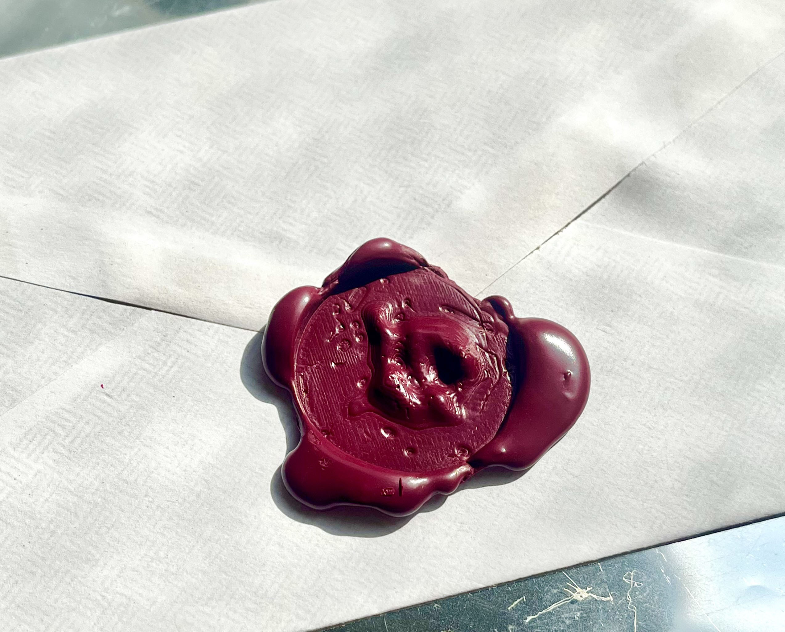

AI Experiments
Learned about different AI tools and ways to use them creatively. Also learned about different types of machine learning models and how to train them.
4.s00 - Design Intelligence
Spring 2022
Generative Music Video
Short animation I made for a class exercise.
I used VQGAN+CLIP to generate videos using the album cover and keywords as input. Then I synced the videos to the music in Premiere.
Song: Why Are Sundays So Depressing by The Strokes
Monogram Stamp
We were exploring variational auto-encoders and training our own models with datasets that we generated. I trained mine on my handwriting, only using the letters from my full name. After training the model I had it generate new "letters" based on my handwriting. Since the results are a gradient space I used them to create a morphing animation. I then picked one of the images that I liked and I used it to create an old-fashioned stamp, like the ones used for wax seals. I turned the image into a 3D surface in Rhino, using the pixel value as a height parameter and then smoothing it out since the image is very low-res. Then I 3D-printed a small disc with a negative of the generated surface. To create a seal I attached the disc to a large screw, which had also provided the necessary weight for stamping. The wax is made from melted crayons, which allowed me to mix colors.
